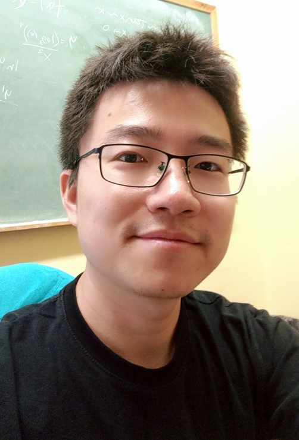

Zhe Su

Department of Mathematics, Michigan State University, East Lansing
Office: C115, Wells Hall
E-mail: suzhe@msu.edu
URL : https://zhesu1.github.io/
About Me
I am currently a research associate at Michigan State University working with Guowei Wei . Prior to this, I held a postdoc position at the University of California, Los Angeles working with Shantanu Joshi. I finished my PhD at Florida State University under the supervision of Eric Klassen and Martin Bauer. My research background lies in differential geometry and in particular in its applications to shape and functional data analysis.
Research Interests
Differential Geometry, Shape Analysis, Numerical Analysis of PDEs, Global Analysis, Data Science, Geometric Statistics, Optimization
Published Articles
- N. Cavallucci, Z. Su.
The metric completion of the space of vector-valued one-forms.
Annals of Global Analysis and Geometry 64, 10 (2023)
doi:10.1007/s10455-023-09916-x ,
arXiv:2302.06840.
- K. Campbell, H. Dai, Z. Su, M. Bauer, T. Fletcher, S. Joshi.
Integrated Construction of Multimodal Atlases with Structural Connectomes in the Space of Riemannian Metrics.
The Journal of Machine Learning for Biomedical Imaging 1 (2022)
doi:10.59275/j.melba.2022-a871,
arXiv:2109.09808.
- K. Campbell, H. Dai, Z. Su, M. Bauer, T. Fletcher, S. Joshi.
Structural Connectome Atlas Construction in the Space of Riemannian Metrics.
Information Processing in Medical Imaging 2021 (IPMI 2021)
doi:10.1007/978-3-030-78191-023 ,
arXiv:2103.05730.
- M. Bauer, E. Klassen, S. Preston, Z. Su.
A diffeomorphism-invariant metric on the space of vector-valued one-forms.
Pure and Applied Mathematics Quarterly, Vol. 17, No. 1 (2021), pp. 141-183.
doi:10.4310/PAMQ.2021.v17.n1.a4
arXiv:1812.10867.
- Z. Su, M. Bauer, E. Klassen, K. Gallivan.
Simplifying Transformations for a Family of Elastic Metrics on the Space of Surfaces.
2020 IEEE Conference on Computer Vision and Pattern Recognition Workshops (CVPRW)
doi:10.1109/CVPRW50498.2020.00432
- Z. Su, M. Bauer, S. Preston, H. Laga, E. Klassen.
Shape Analysis of Surfaces Using a New Family of Elastic Metrics.
Journal of Mathematical Imaging and Vision
doi:10.1007/s10851-020-00959-4,
arXiv:1910.02045, 2019.
- Z. Su, M. Bauer, E. Klassen.
Comparing Curves in Homogeneous Spaces.
Differential Geometry and its Applications, 60 (2018), 9-32.
doi:10.1016/j.difgeo.2018.05.001,
arXiv:1712.04586.
- Z. Su, M. Bauer, E. Klassen.
The Square Root Velocity Framework for Curves in a Homogeneous Space.
2017 IEEE Conference on Computer Vision and Pattern Recognition Workshops (CVPRW)
doi:10.1109/CVPRW.2017.97,
arXiv:1706.03095.
Software Packages
-
Surface registration of spherical surfaces with the general elastic metrics. https://github.com/zhesu1/surfaceRegistration.
-
Geometric shape analysis of spherical surfaces with the first order elastic metrics. https://github.com/zhesu1/elasticMetrics.
-
Geometric shape analysis of open curves with values in homogeneous spaces.
https://github.com/zhesu1/SRVFhomogeneous.
Teaching
- MAC2313, Instructor of record for Calculus III, Summer 2019
- MAC2313, Instructor of record for Calculus III, Spring 2019
- MAC2311, Instructor of record for Calculus I, Fall 2018
- MAC1140, Instructor of record for PreCalculus, Spring 2018
- MAC1140, Instructor of record for PreCalculus, Fall 2017
- MAC2311, Recitation TA for Calculus I, Fall 2016